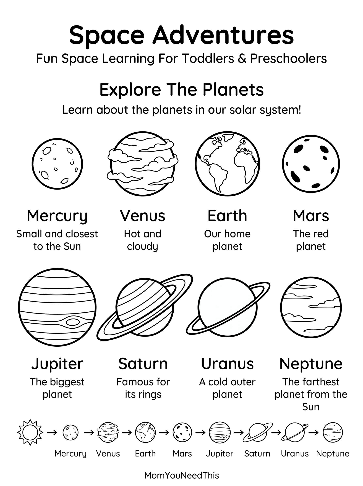

Space & Planets Free Printable Space & Planets Chart For Kids
Take your child on an out-of-this-world learning adventure with this fun, kid-friendly space and planets printable. Explore the solar system, learn about the planets, and introduce young children to the wonders of outer space.
🌎 Explore The Solar System
Use the printable to help your child learn the names of the planets, discover where Earth fits in the solar system, and start conversations about space and our universe.
Free Space & Planets Printable


How To Use This Printable
Point to each planet and practice saying its name together. Talk about which planet we live on, which planets are closest to the Sun, and what makes each planet interesting. You can also use the printable for preschool lessons, space-themed activities, or quiet learning time.
Why Learn About Space & Planets?
Learning about space encourages curiosity and helps children build early science vocabulary while discovering more about the world beyond Earth. It can also inspire questions, observation, and imaginative learning.
🎁 Keep Exploring Free Learning Activities
Discover more printable activities, toddler resources, and learning ideas created for busy parents.
🎁 View All Free Resources